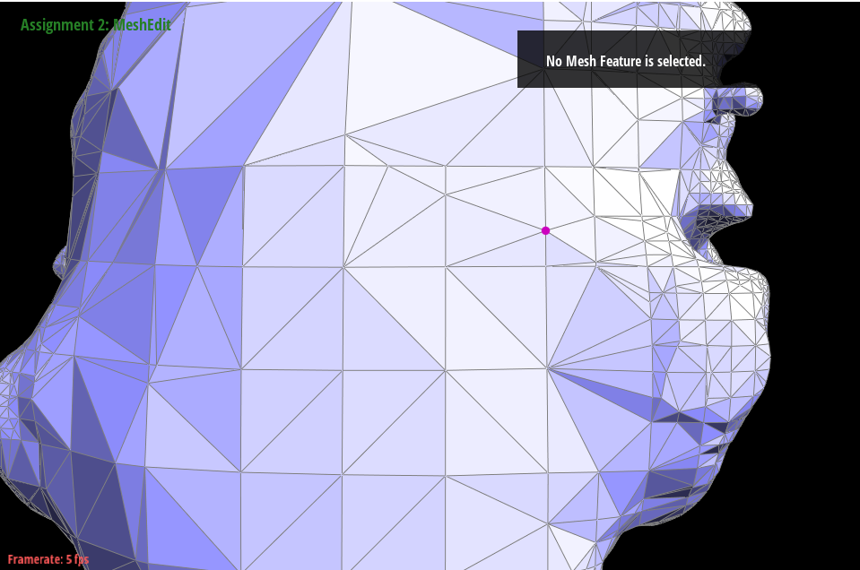

Abstract
In this project, we explored different subdivision schemes and remeshing. We implemented the modified butterfly subdivision scheme and the sqrt3-Subdivision. We also implemented isotropic remeshing algorithm based on our newly-implemented local mesh operations vertex shift and edge collapse.
Technical approach
Modified Butterfly Subdivision Scheme
When we implement butterfly scheme, we computes a new scalar value for each edge midpoint of the triangulation with four distinguish cases.
Case 1: The edge connects two vertices of valence 6. We calculate weighted position of the new vertex according to the following graph with a, b, c, and d representing different weights

Case 2: The edge connects a K-vertex (K != 6) and a 6-vertex. We calculate weighted position of the new vertex according to the following graph with s0 to sj representing different weights depending on the value of K.

Case 3: The edge connects two extraordinary vertices. In this case, we take the average of the values computed using the method shown on case 2.
Case 4: Boundary Edges. In this case, we calculate the position of the new vertex using the 1-dimensional 4 point scheme.
Sqrt3-Subdivision Scheme
The sqrt3-subdivision operator inserts a new vertex for every triangle of the given mesh, using the following equation: q := 1/3 * (pi + pj + pk) where the new vertex q is simply inserted at the center of the triangle with vertices pi, pj, and pk.
And then we create new edges between q and pi, q and pj, and q and pk. We flip every original edge which connects two old vertices
At the end we update the position of the old vertices using the following relaxation equation:

Adaptive Refinement in Sqrt3-Subdivision Scheme
One of the advantage in the Sqrt3-Subdivision Scheme is that it is better suited for adaptive refinement. The consistency preserving adaptive refinement can easily be implemented by a simple recursive procedure.
For refinement schemes based on the dyadic split operation, the
local splitting of one triangular face causes gaps if neighboring
faces are not refined (as shown on left). These gaps have to be removed
by replacing the adjacent (unrefined) faces with a triangle fan. As
shown on the right, this simple strategy tends to generate very badly
shaped triangles if no balance of the refinement is enforced.
|
|

|
The adaptive refinement can be implemented by the following recursive procedure:
Remeshing
Continuing from where we left off on homework 2, we implement extra local operations like edge collapsing and vertex shifting. And then we combine all these
operations to implement our incremental remeshing method.
To be more specific, For the collapseEdge function, it takes an edge as input and outputs a vertex. Our goal is to collapse the input edge to get a new mesh.
Suppose the two vertices of this edge are v0 and v1, and we want to remove v0. Firstly, we traverse all the halfedges that have v0 as their vertex and modify
their vertices to v1. Secondly, we reassign certain halfedges corresponding to some vertices and faces to prevent them from pointing to the halfedges that will
be deleted. Then we reorganize the relationships between the halfedges so that they connect to form new triangles. Finally, we delete the surplus edges, faces,
vertex and halfedges.
And for vertex shifting, we sum up the positions of all vertices adjacent to the selected vertex and take the average to calculate the average
position of the surrounding vertices. Then, we constrain the position of the vertex on surface through projection, rather than directly assigning the average
position to this vertex.
Finally, we loop through Spliting, Collapsing, Flipping, vertex shifting, and projection to get our remeshed result.
Problems encountered: Since Collapse deletes many mesh elements, which easily led to pointer errors and caused the program to crash,
we spent so much time on it. We asked TA Tianyun for some debugging tips and discussed together and finally figured out that since we
are deleting edges while we iterate through all the edges in the mesh, some edges may have been deleted before we get its edgeiter. So
we add a set which contains all the edges that have been deleted during collapsing and avoid operating them in later process.
Results
Subdivision
Cube.dae
Modified Butterfly Subdivision Scheme

|
|

|
Sqrt3-Subdivision Scheme

|

|

|
Loop Subdivision

|

|

|
teapot.dae
Modified Butterfly Subdivision Scheme

|

|
|
Sqrt3-Subdivision Scheme

|
|
|
Loop Subdivision
|
|
|

|
As the images shown, all three schemes have the effect of smooth and finer. The Sqrt3 scheme forms fewer triangles compare to other schemes at the level goes up. The modified butterfly scheme produce images with more sharpness.
teapot.dae
Adaptive refinement in sqrt3-Subdivision with random criteria
|
|
|
Video
Remeshing
Collapsing:

|

|
Shifting:

|
|
Video
References
• https://mrl.cs.nyu.edu/~dzorin/papers/zorin1996ism.pdf
• https://www.graphics.rwth-aachen.de/media/papers/sqrt31.pdf
• https://www.hao-li.com/cs599-ss2015/slides/Lecture09.1.pdf
• https://www.graphics.rwth-aachen.de/media/papers/remeshing1.pdf
Contributions from each team member
• Angel Tu: Modified Butterfly Subdivision Scheme, websites, and slides.
• Jiacheng Song:
• Youxun Liu:edge collapse, vertex shift, GUI remeshing, and slides.
• Zhen Fu: edge collapse, vertex shift, remeshing, websites, and slides.